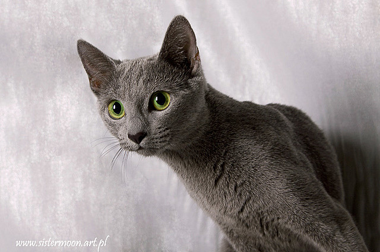

Kot Rosyjski
Pochodzenie
Kot rosyjski niebieski uważany jest za rasę naturalną. Hodowcy zmienili tylko nieco wygląd kotów rosyjskich. Współcześni przedstawiciele tej rasy są o wiele smuklejsi i mają jaśniejsze futro niż ich przodkowie. Ogólnie przyjęło się, że ojczyzną kotów rosyjskich niebieskich, jak sama nazwa wskazuje, są tereny Rosji, a dokładniej okolic Archangielska nad Morzem Białym (dlatego swego czasu nazywano je także kotami archangielskimi).
Charakter i zachowanie
Kot spokojny, cichy i łagodny, inteligentny; aktywny do późnego wieku, skoczny, chętnie się wspina. Przywiązany do właściciela, nie lubi samotności, dobrze się czuje w towarzystwie innych czworonogów; domator. Koty te mają wyjątkowo wrażliwą i czułą naturę. Wobec obcych zachowują najczęściej dystans.
Pielęgnacja
Gęste futro kota rosyjskiego niebieskiego łatwo utrzymać w dobrym stanie. Kota nie wystawianego wystarczy raz na jakiś czas porządnie wyczesać metalowym zgrzebłem lub szczotką włosianą. Dobrze jest również regularnie przycinać mu pazury.